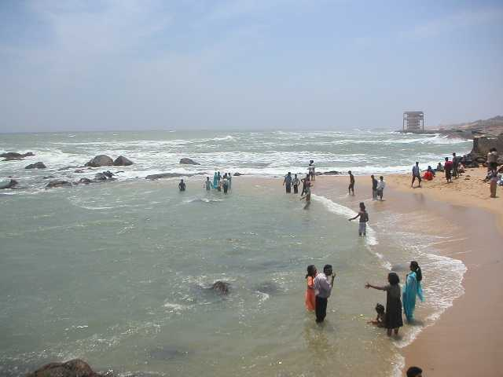

Perunthenaruvi Waterfall
A natural waterfall with captivating surroundings is situated on the banks of the River Pamba. The fall is 60 to 100 ft deep which pours down on a rocky bed. The place is a favourite picnic spot among locals as well as tourists.

gavi
Gavi is situated some 14 km away from the famed Periyar Tiger Reserve and is heaven on Earth, quite literally

thriveni sangamam
As the name suggests this place is famous for the meeting point of the three rivers. It serves as the halting point for those on their way to Sabarimala.

konni forest
This place is considered to be the equivalent to an elephant's cage. The reason being is that the main attraction of the region is a massive wooden cage where elephant are trained.